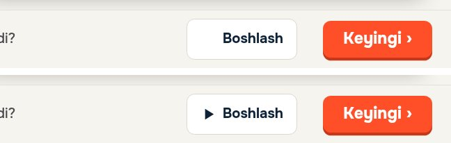
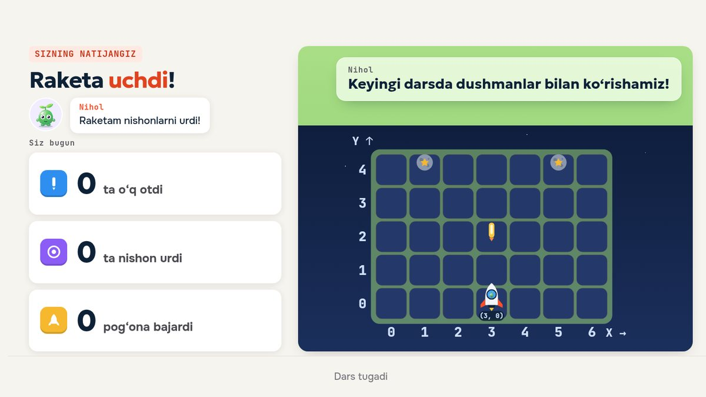
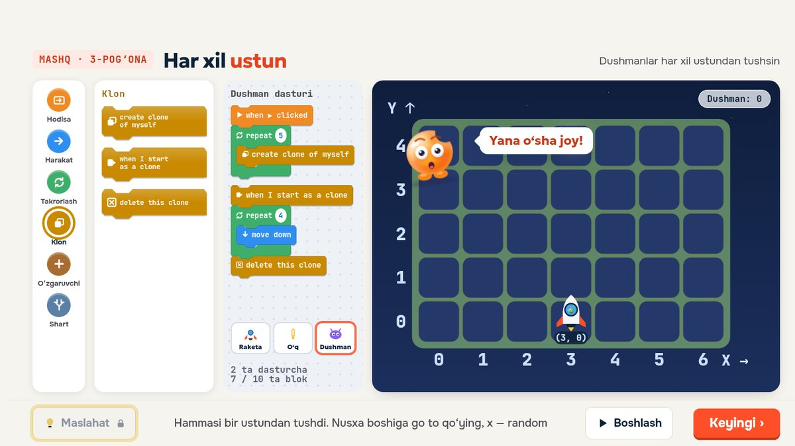
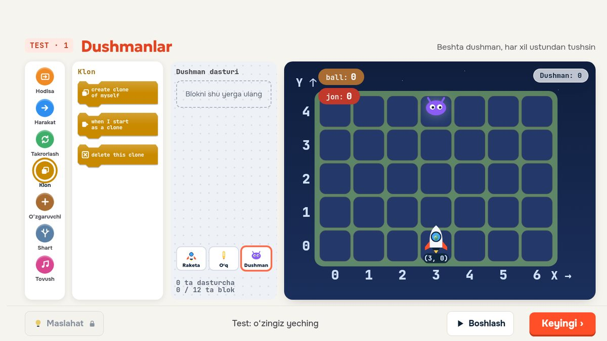
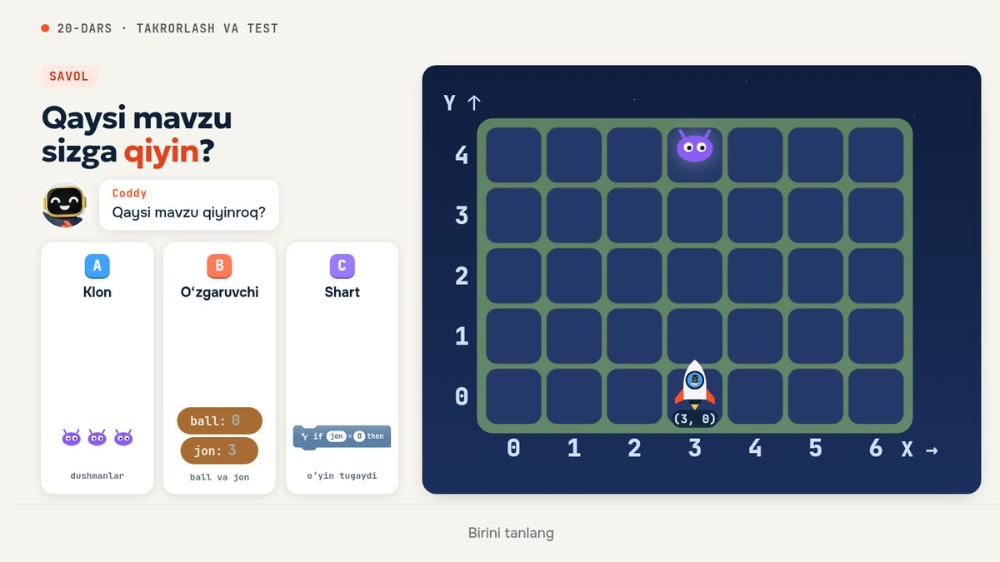
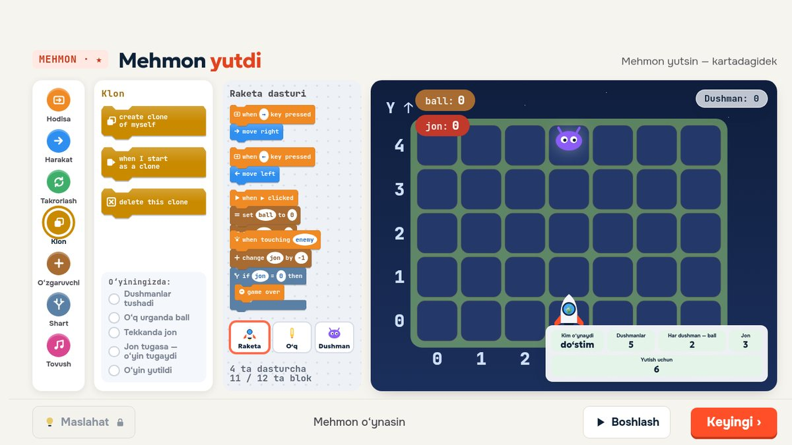
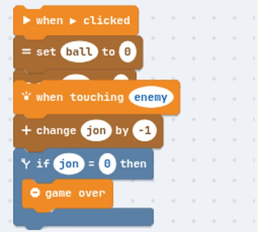
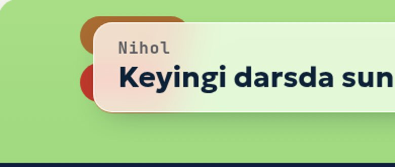

QA fidbekidan oldin: to‘rt kamchilik yopilmoqda
10-versiya. 1–23-dars QA saytida. QA javobi kelguncha o‘zimiz bilgan kamchiliklarni yopayapmiz: ikkitasi tuzatildi (pastda, suratda), ikkitasi uchun sizning qaroringiz kerak. Tekshiruv paytida yana ikkita kamchilik topildi — ular ham shu yerda.
Har savolda tavsiya belgilangan. Rozi bo‘lsangiz, hech narsa bosmasdan pastdagi «Javobni nusxalash» ni bosing va matnni chatga tashlang.
Solo’da ▶ belgisi oq fonda oq edi
Bola darsni ustozsiz o‘tganda topshiriq ekranida «Keyingi ›» qo‘shiladi, asosiy tugma («Boshlash», «Ishga tushir», «Tekshirish», «Sinab ko‘rish») oq tugmaga aylanadi. Ichidagi ▶ esa oq qolib, ko‘rinmay qolardi — tugmaning chap tomoni bo‘sh. Endi belgi tugma matni rangida. O‘yin to‘xtaganda tugma eski nusxasidan tiklanadi, shuning uchun tuzatish uslubda (kodda almashtirilsa, to‘xtagach yana oq bo‘lardi).

Manbalardagi ochiq savollar
1. 17-dars yakuni: «O‘yiningizda:» ro‘yxati
Manbada bola yakun ekranida ro‘yxat bor («Raketa yuradi · O‘q otiladi · O‘q o‘chadi · Hamma nishon urildi»), darsda yo‘q. 9- va 10-darsda shu ro‘yxat yakunda turadi.


2. 18-dars, «Har xil ustun» pog‘onasi: maslahat matni
Dushmanlar bitta ustundan tushsa, «Son o‘rniga random qo‘ying» chiqadi. Lekin bu pog‘onada tayyor dasturda go to yo‘q — almashtiradigan son ham yo‘q, bola nima qilishni bilmaydi. Javondagi go to bloki «x: 3, y: 4» bilan turadi, ya’ni y ni o‘zgartirish shart emas.

3. 20-dars: test qanday bo‘ladi?
Hozir test — amaliy topshiriq: o‘sha kosmik o‘yinda bola dasturni noldan tuzadi, maslahat yopiq («Test: o‘zingiz yeching»). Savol-javob testi (rasm va 3 variant) 59-qarorga zid — dars ichida test savoli yo‘q — va yangi mexanika talab qiladi.


4. 21-dars: loyiha kartasidagi qiymatlar
Bola to‘rt qatorni tanlaydi: kim o‘ynaydi · dushmanlar 3 / 5 / 8 · har dushman 1 / 2 / 3 ball · jon 3 / 4 / 5. Yutish uchun ball o‘zi hisoblanadi (ball × dushmanlarning yarmi, yuqoriga yaxlitlab: 5 dushman × 2 ball → 6). Halol aytaman: 27 kombinatsiyaning hammasi yutiladigan ekani bot bilan hali o‘lchanmagan.

5. 23-dars: «ta mehmon yutdi» soni
«Mehmon yutdi» ekranida o‘yinni mehmon (ota-ona) o‘ynaydi, bola aytib beradi. Dvigatel kim o‘ynayotganini bilmaydi: bola o‘zi o‘ynab yutsa ham son «mehmon yutdi» bo‘lib sanaladi.

6. 23-dars: Scratch’ga o‘tish yo‘riqnomasi
Bola noutbukida uch qadam («Scratch saytiga kiring — ota-onangizdan ruxsat so‘rang» · «Yangi loyiha oching» · «O‘yiningizni o‘zingiz yasang»), ustoz ekranida jadval «Blok studiya → Scratch» (hodisa, klon, o‘zgaruvchi). Dars ichida Scratch ochilmaydi: sinfda internet kafolatlanmagan, 13 yoshdan kichiklarga ota-ona ruxsati kerak.

Yana ikki kamchilik
Qaror suratlarini olayotganda ko‘rindi. Ikkalasini ham avtomatik tekshiruv bilan 23 darsda qidirdim.
7. Dasturchalar bir-birining ustiga tushadi
{USTMA_MATN}


set ball to 0 ostidagi set jon to 3 — «when touching enemy» tagida.8. Yakun ekranida o‘zgaruvchilar karta ortida
{KAPS_MATN}

Qolgan 71 savol — tavsiya bo‘yicha qurilgan
Har dars manbasidagi savollar. Hammasi A (tavsiya) bo‘yicha qurilgan va sinovdan o‘tgan, siz hali tasdiqlamagansiz. Ro‘yxatni ochib ko‘ring; e’tirozingiz bo‘lsa, B ni tanlab raqamini izohga yozing. Yuqoridagi 3–6-qaror shu ro‘yxatdagi 20·1, 21·3–5, 23·2–3 ning batafsilidir.
{QOLGAN}